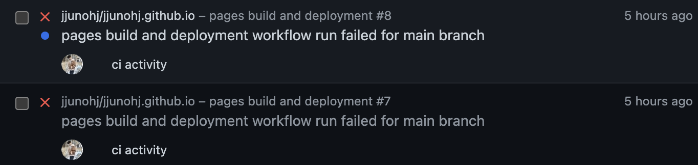

[Blog] 깃허브 블로그 만들기/포스팅/배포 과정 중 발생한 에러
“명색이 개발자면 블로그는 github.io 써야지”
2023년엔 지금껏 곳곳에 작성했던 여러 TIL들을 싹 없애고, 아예 새로운 블로그를 만들어 배운 걸 착착 기록하고자 한다. 여러 블로그 환경들 중 내가 선택한 것은 가장 개발자스러운 깔끔하고 커스터마이징이 가능한 github.io 였다.
그리고 github.io에서 올리게 될 첫 포스팅은 당연하게도, github.io를 만드는데 겪었던 오류들에 대한 것이다. 본인은 jekyll을 사용하여 깃허브 블로그를 만들었는데, 이 과정에서 필요한 것들이 의존성 관리가 잘 안 되는 것인지 하나를 해결하면 다른 하나가 안되고 사람 미치게 만드는 무언가가 존재했다.
아무튼, 본 포스팅은 Github.io를 만들고, 깃허브에서 페이지를 등록하는 것까지의 과정을 일일이 설명하는 것이 아니다. 그저 구글에 아~주 간단하게 나와있는 Github.io 만들기를 따라하면서 무려 6시간동안 겪은 수많은 에러와의 사투 (나한테만 있는 건지..) 들을 정리해보고자 하는 것이다.
Gem 설치 에러 / Gem::FilePermissionError
jekyll을 설치하기 위해서는 선행 조건인 Ruby와 bundler가 필요하다. 기본적으로 Mac을 사용하게 되면 패키지를 설치할 때 ruby 기반인 Homebrew를 이용하기 때문에 당연히 설치되어 있고, 문제가 없을 줄 알았다.
Mac M1 개발환경에서 ruby의 패키지 매니저인 gem을 통해 bundler를 설치하다 다음과 같은 에러가 발생했다.
$ gem install bundler
ERROR: While executing gem ... (Gem::FilePermissionError)
You don't have write permissions for the /Library/Ruby/Gems/X.X.X directory.
write 권한이 없다고 하는데, 여러 블로그들을 찾아보며 알아 본 결과 기본적으로 OS ruby를 사용하고 있기 때문에 권한이 없어서 gem설치가 안됐던 것이라고 한다.
따라서 sudo를 통해 root 권한으로 실행하면 설치가 가능하다고 하지만, 보안상 권장하지 않는 설치법이라고 한다.
찾아낸 해결방안은 rbenv를 이용하는 것이었다. rbenv는 ruby의 버전을 독립적으로 사용할 수 있도록 도와주는 패키지이다.
rbenv는 개발자가 진행하는 프로젝트들이 각각 상이한 ruby 버전을 사용할 경우 각 프로젝트를 개발할 때마다 매번 ruby 버전을 지우고 다시 설치하는 상황을 방지한다.
문제 해결
먼저 brew를 통해 rbenv를 설치한다.
$ brew update
$ brew install rbenv ruby-build
rbenv가 잘 설치되었는지 확인한다.
$ rbenv versions
* system
여기서 앞서 말했듯이 현재 system ruby를 사용하고 있는 것을 확인할 수 있다.
이제 rbenv로 관리되는 ruby를 설치하자.
설치할 수 있는 ruby 버전은 다음 명령어로 확인할 수 있다.
$ rbenv install -l
2.7.7
3.0.5
3.1.3
3.2.0
jruby-9.4.0.0
mruby-3.1.0
picoruby-3.0.0
rbx-5.0
...
여러가지가 나오는데 이 중에 가장 최근 것을 다운받으라고 한다.
rbenv install 3.2.0
rbenv 설치 에러 / BUILD FAILED (macOS 13.1 using ruby-build 20221225)
BUILD FAILED (macOS 13.1 using ruby-build 20221225)
rbenv install 3.2.0을 하면 이런 에러가 자꾸 뜬다.
열심히 찾아 본 결과 ruby 3.2.0에는 psych를 필요로하는데 따라서 libyaml 없이 설치할 경우 에러가 뜬다는 내용이 있었다.
문제 해결
해결책은 다음과 같았다.
- Mac OS를 최신 버전으로 업데이트한다.
homebrew로libyaml를 설치한다.
명령어는 다음과 같은 순으로 실행했다.
$ brew install libyaml
$ brew update && brew upgrade ruby-build
$ rbenv install 3.2.0
하지만, 나는 이 번거로움이 싫어서 그냥 3.1.3 버전을 설치 후 사용했다 . . .ㅎㅎ..
$ rbenv global 3.1.3
그럼 ruby를 설치했으니 rbenv PATH를 추가하기 위해 쉘 설정파일에 다음 코드를 추가한다.
$ vim ~/.zshrc
[[ -d ~/.rbenv ]] && \
export PATH=${HOME}/.rbenv/bin:${PATH} && \
eval "$(rbenv init -)"
추가했다면, source로 코드를 적용한다.
$ source ~/.zshrc
다시 gem install을 실행한다.
$ gem install bundler
이제서야 gem install이 되는 모습
Jekyll 설치 에러 / Bundler::GemNotFound
$ gem intall jekyll
$ jekyll serve
드디어 선행 설치요소가 다 설치하고 jekyll을 설치하고 실행하려는데,
$ jekyll serve
/xuuno/.rbenv/versions/3.1.3/lib/ruby/gems/3.1.0/gems/bundler-2.4.3/lib/bundler/resolver.rb:314:in `block in verify_gemfile_dependencies_are_found!': Could not find gem 'jekyll (~> 3.5)' in any of the gem sources listed in your Gemfile. (Bundler::GemNotFound)
오류가 등장한다.
문제 해결
Gemfile에 리스트된 gem source들 중에 jekyll을 찾을 수 없다고 하는데, 이는 bundle 패키지 매니저를 사용하면 된다.
bundle은 하나의 package manager로, Gemfile에 등록되어 있는 gem에 맞춰서 패키지를 사용해 의존성을 해결한다.
즉, bundle exec를 앞에 붙여서 실행하면 된다.
$ bundle exec jekyll serve
Could not find gem 'jekyll (~> 3.5)' in any of the gem sources listed in your Gemfile.
Run `bundle install` to install missing gems.
이제는 bundle install을 하라는 메시지가 나온다.
하라는대로 하면 여러 다른 gem metadata가 fetch된다.
$ bundle install
Gem 로드 에러 / Gem::LoadError
이렇게 설치를 한 뒤 jekyll serve를 하면 다음과 같은 에러가 뜬다.
You have already activated i18n 1.12.0, but your Gemfile requires i18n 0.9.5. Prepending `bundle exec` to your command may solve this. (Gem::LoadError)
문제 해결
이는 현재 나의 로컬에서 활성화되어 있는 버전은 i18n 1.12.0이고, Gemfile에는 i18n 0.9.5가 설치되어 있고 이 의존성을 해결하기 위해 코드를 다 고칠 수는 없으니 앞에 bundle exec를 붙여서 사용하라는 뜻이다.
그러므로
$ bundle exec jekyll serve
앞으로 위 명령어를 사용해주면 된다.
암튼 실행됐죠?
Jekyll 로드 에러 / webrick(loadError)
하지만 처음에 jekyll serve를 실행할 때는 아래와 같은 에러가 등장한다.
Please append --trace to the serve command for any additional information or backtrace....cannot load such file -- webrick(loadError)
bundle exec jekyll serve를 해도 자꾸 등장하는 이 에러의 원인은, webrick이라는 파일이 없어러 load를 할 수 없다는 내용인데, ruby 3.0.0 버전부터 webrick이 기본으로 포함된 gem에서 빠졌기 때문에 발생한다.
문제 해결
$ bundle add webrick
을 추가해주면 된다.
이를 끝으로 localhost:4000에서 접속을 하는데 성공했다.
문법 지원 중단 문제 / Deprecation Warning: Using / for division outside of calc() is deprecated and will be removed in Dart Sass 2.0.0
나름 되게 골머리를 앓았던 에러인데, calc 함수 외부에서 /를 이용하여 나눗셈을 하는 것은 더이상 지원되지 않아서 발생하는 오류이다.
하필 적용하려는 테마에서 반응형을 지원할 때 /를 여러 군데 사용하여 구현하여 위와 같은 에러가 발생했다.
문제 해결
이를 위해 모든 문제가 있는 파일과 라인을 찾아가 sass:math의 math.div 혹은 calc( / )를 직접 하나하나 다 써주어야 했다.
@use "sass:math";
body {
font-size: math.div(50, 16) * 1px;
}
멍청해서 요수를 부리는 것보다 일단 노가다를 시작하는 게 더 빠르다
Jekyll-Scss 변환 에러 / Conversion error: Jekyll::Converters::Scss encountered an error while converting ‘assets/css/main.scss’
github.io에 테마를 적용하고, 네비게이션 바를 조금 바꾸니 마주쳤던 에러이다.
문제 해결
SCSS에서 자신이 변경한 부분이나 ;, {, } 등 부호에 각별하게 주의를 해서 코드를 마무리 했어야 했다.
Github pull 에러 / Authentication failed for ~ use a personal access token instead
새로운 리포지토리를 파고, 해당하는 리포지토리에 git pull할 때 위와 같은 에러가 발생한다. 이는 2021년 8월 이후로 ID/PW 방식이 아닌 token을 이용하여 로그인을 하기 때문에 발생하는 것이다. 좀 불편하지만, 보안이 더 좋아지는 것이니 감내해야 할 것 같다.
문제 해결
- github 계정 로그인
- 우측 상단
Settings - 좌측 최하단
Developer settings Personal access tokens탭Generate new token- 사용처, 만료 기간 결정 후 생성
- 생성된 토큰 키 복사
- 이후
git config로 등록
$ git config --global user.name ‘아이디’
$ git config --global user.password ‘복사한 토큰’
Github pages 빌드 에러
localhost:4000에서는 잘만 실행되는 블로그가 깃허브 레포지토리에 push만 하면 build가 아작이 나는 상태가 계속되었다.

분명 Github Pages는 jekyll을 지원하고, 내 블로그는 로컬에서 잘만 돌아가는데 왜 원격에선 빌드가 되지 않을까.
당연하게도 이유는 Github의 배포 환경과 내 로컬 환경이 완전히 동일하지 않기 때문이다. 따라서 내가 만든 Gemfile을 github는 읽지 않고, Github만의 Gemfile을 사용하기 때문에 발생하는 것이다.
_config.yml의 theme옵션은 프로젝트에 설치된 gem으로부터 jekyll theme을 불러올 수 있게 한다. 그렇게 원하는 테마의 gem을 깔았지만, 이 테마를 Github Pages에서 지원한다는 보장은 없었다. 결국 jekyll theme이 문제였다. Github Pages에서 사용 가능한 theme은 정해져 있으며, 여기에 없는 theme일 경우 github는 page build warning을 선사한다.
문제 해결
Remote theme 방법을 사용한다.
Remote theme 방식은 Gem 기반 방식과 유사하게 직접 테마 파일을 가지지 않는 방법이다. Guthub pages에서 본인이 사용하는 테마인 minimal-mistakes 테마의 remote theme 방식을 지원하기 때문에 이 방식을 사용할 수 있다.
_config.yml파일 수정 remote_theme 줄의 주석을 푼다.# theme : "minimal-mistakes-jekyll" remote_theme : "mmistakes/minimal-mistakesGemfile을 아래와 같이 수정한다.source "https://rubygems.org" gem "github-pages", group: :jekyll_plugins gem "jekyll-include-cache"bundle명령을 통해 필요한 gem을 설치한다.$ bundle install-
bundle exec jekyll serve실행 _site 폴더가 만들어지면서 블로그 파일들이 자동으로 생성된다. push